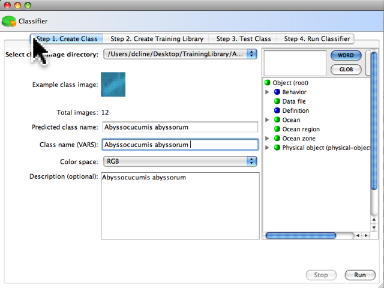
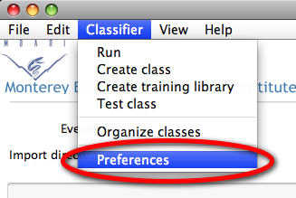
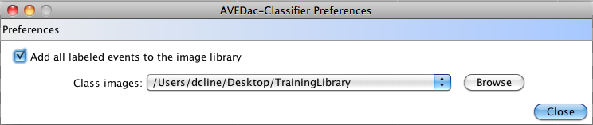

Automated
Visual Event Detection and Classification
AVEDac
Classifier
Classifier
The AVEDac classifier uses a supervised learning method that requires a predefined class. By default, all the events that you label in the EventTable or EventThumbnail views are sorted into these predefined classes (which in this context is a group of related images). A training library is a collection of these classes that is trained by a statistical learning approach called a Gaussian mixture model. More information on the classifier can found in the following paper:M. Ranzato, P.E. Taylor, J.M. House, R.C. Flagan, Y. LeCun and P. Perona. Pattern Recognition Letters
Volume 28, Issue 1, 1 January 2007, Pages 31-39. doi:10.1016/j.patrec.2006.06.010
If you use this sofware in your research, please cite this work !
Step 1. Create Class
Before
creating a training library, a statistical pattern for each class in
the training library has to created. This step must be repeated whenever new images are added to a class.
Step 2. Create Training Library
When the
classes are collected, a training library can be generated. A training library can constist of one or more classes.
Step 3. Test ClassTesting
a class is a method that test a 10% random sample of the class against
a training library. This is an optional
step, but useful to determine how effective a class is in discriminating
itself.
Step
4. Run ClassifierRun the classifier. Requires step 1 and 2 to be completed. Once a training library is created, the classifier can
be run.

Classifier preferences
By default, all the
events that you label in the EventTable or EventThumbnail views
automatically generate these predefined classes. When you
are done creating classes, to turn off this default, first, select the
Preferences in the Classifier menu.

Next, uncheck the Add
all labeled events to the image library.
